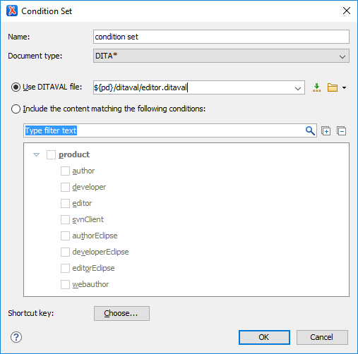

Creating and Editing Profiling Condition Sets
Multiple profiling attributes can be aggregated into a profiling condition set that allows you to apply more complex filters on the document content. A Profiling Condition Set is a very powerful and convenient tool that can be used to preview the content that goes into the published output. For example, an installation manual available in both Windows and Linux variants can be profiled to highlight only the Linux procedures for more advanced users.
Create Profiling Condition Sets
- Open the
Preferences dialog box and go to .Information: The Profiling Condition Sets section is used to define condition sets.
-
To add new condition set, click the New button at the bottom of the Profiling Condition Sets table. To customize existing condition sets, select an existing condition set and click the Edit button.
Step Result: In either case, this opens a Condition Set configuration dialog box where you can define attributes that exist in your schema.
Figure 1. Condition Set Configuration Dialog Box The following options are available in this dialog box:
- Name
- The name of the new condition set.
- Document type
- Select the document type (framework) that has profiling attributes defined.
- Use DITAVAL file
- For DITA projects, select this option if you want the Profiling Condition
Set to reference a DITAVAL file.
You can
specify the path by using the text field, its history drop-down, the
 Insert Editor
Variables button, or the browsing actions in the
Insert Editor
Variables button, or the browsing actions in the  Browse drop-down list.
Browse drop-down list. - Include the content matching the following conditions
- You can select this option to define the combination of attribute values for your condition set by selecting the appropriate checkboxes for the values you want to be included in this particular condition set. If you have defined a lot of profiling attributes, you can use the filter text field to search for specific conditions.
- Shortcut key
- You can click the Choose button to open a dialog box that allows you to define a shortcut key for this particular condition set. You can then use that shortcut key anytime you want to select this condition set to filter content.
- After defining or configuring the condition sets according to your needs, click OK to confirm your selections and close the Condition Set configuration dialog box.
- Click Apply to save the condition set.
Sharing Condition Set Configurations
Your condition set configuration can be shared with other users through a project file. If you select Project Options at the bottom of the Profiling/Conditional Text preferences page, your configuration is stored in the project file and can be shared with others. For instance, if your project file is saved on a version control system (such as SVN, CVS, or Source Safe) or in a shared folder, your team will have the same option configuration that you stored in the project file.
For more information about sharing project files, see Sharing a Project - Team Collaboration.